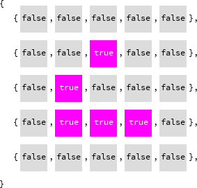

There is a grid of cells, which are either alive or dead.
After a step of time:
All other cells die.
Create an initial configuration of cells, hold a key to step forward in time, and observe.
| Left click | Make cell alive |
| Right click | Make cell dead |
| Any key | Step forward in time |
The cells are stored as a grid of boolean values, true for alive and false for dead.
When time steps forward, a new grid is created, and whether the cells of this new grid are alive or dead is based on the current grid.
After the new grid is complete, the current grid is replaced with the new grid.
A cell is drawn as a square.
function love.draw() love.graphics.rectangle( 'fill', 0, 0, 4, 4 ) end

A row of cells are drawn, with 1 pixel between each cell.
function love.draw() for x = 1, 70 do local cellSize = 5 local cellDrawSize = cellSize - 1 love.graphics.rectangle( 'fill', (x - 1) * cellSize, 0, cellDrawSize, cellDrawSize ) end end
All of the rows are drawn.
function love.draw() for y = 1, 50 do for x = 1, 70 do local cellSize = 5 local cellDrawSize = cellSize - 1 love.graphics.rectangle( 'fill', (x - 1) * cellSize, (y - 1) * cellSize, cellDrawSize, cellDrawSize ) end end end
The background and dead cell colors are set.
function love.load() love.graphics.setBackgroundColor(255, 255, 255) end function love.draw() for y = 1, 50 do for x = 1, 70 do local cellSize = 5 local cellDrawSize = cellSize - 1 love.graphics.setColor(220, 220, 220) love.graphics.rectangle( 'fill', (x - 1) * cellSize, (y - 1) * cellSize, cellDrawSize, cellDrawSize ) end end end
The cell position that the mouse cursor is over is stored.
This is calculated by taking the mouse position and dividing it by the cell size, flooring this number, then adding 1 to it.
For example, if the mouse is at position 17 on the X axis and the cell size is 5, dividing 17 by 5 gives 3.4, flooring 3.4 gives 3, and adding 1 gives 4, meaning that the mouse is over cell 4 on the X axis.
The cell size is needed to calculate this, so it is moved into love.load.
For now, this position is drawn to the screen as text.
function love.load() -- etc. cellSize = 5 end function love.update() selectedX = math.floor(love.mouse.getX() / cellSize) + 1 selectedY = math.floor(love.mouse.getY() / cellSize) + 1 end function love.draw() -- etc. -- Removed: local cellSize = 5 -- Temporary love.graphics.setColor(0, 0, 0) love.graphics.print('selected x: '..selectedX..', selected y: '..selectedY) end

The square under the mouse cursor is set to the highlighted color.
function love.draw() for y = 1, 50 do for x = 1, 70 do -- Removed: local cellSize = 5 local cellDrawSize = cellSize - 1 if x == selectedX and y == selectedY then love.graphics.setColor(0, 255, 255) else love.graphics.setColor(220, 220, 220) end love.graphics.rectangle( 'fill', (x - 1) * cellSize, (y - 1) * cellSize, cellDrawSize, cellDrawSize ) end end end
A grid is created to store the cells.
Each cell is represented by a boolean value: true for alive, false for dead.
If the cell is alive, the alive color is used to draw the cell.
To test this, some cells are manually set to alive.
The grid's width/height in cells is reused from drawing the cells, so variables are made for these.
function love.load() -- etc. gridXCount = 70 gridYCount = 50 grid = {} for y = 1, gridYCount do grid[y] = {} for x = 1, gridXCount do grid[y][x] = false end end -- Temporary grid[1][1] = true grid[1][2] = true end function love.draw() for y = 1, gridYCount do for x = 1, gridXCount do local cellDrawSize = cellSize - 1 if x == selectedX and y == selectedY then love.graphics.setColor(0, 255, 255) elseif grid[y][x] then love.graphics.setColor(255, 0, 255) else love.graphics.setColor(220, 220, 220) end love.graphics.rectangle( 'fill', (x - 1) * cellSize, (y - 1) * cellSize, cellDrawSize, cellDrawSize ) end end end
If the left mouse button is down, the selected cell is set to alive.
function love.update() -- etc. if love.mouse.isDown(1) then grid[selectedY][selectedX] = true end end

Setting the cell to alive is only possible if the selected X/Y position is within the grid.
function love.update() selectedX = math.floor(love.mouse.getX() / cellSize) + 1 selectedY = math.floor(love.mouse.getY() / cellSize) + 1 if love.mouse.isDown(1) and selectedX <= gridXCount and selectedY <= gridYCount then grid[selectedY][selectedX] = true end end
Updating the grid after a step of time requires knowing how many alive neighbors each cell has.
For now, right clicking a cell will print out how many alive neighbors it has.
grid[selectedY + dy] is checked to see if it exists before grid[selectedY + dy][selectedX + dx], because if selectedY + dy is not on the grid, then grid[selectedY + dy] will return nil, and grid[selectedY + dy][selectedX + dx] will error because the [selectedX + dx] part is trying to index nil.
function love.mousepressed(mouseX, mouseY, button) -- Temporary. if button == 2 then local neighbourCount = 0 print('Finding neighbors of grid['..selectedY..']['..selectedX..']') for dy = -1, 1 do for dx = -1, 1 do print('Checking grid['..selectedY + dy..']['..selectedX + dx..']') if not (dy == 0 and dx == 0) and grid[selectedY + dy] and grid[selectedY + dy][selectedX + dx] then print('Neighbour found') neighbourCount = neighbourCount + 1 end end end print('Total neighbors: '..neighbourCount) end end
Finding neighbors of grid[10][10] Checking grid[9][9] Checking grid[9][10] Checking grid[9][11] Neighbour found Checking grid[10][9] Checking grid[10][11] Checking grid[11][9] Checking grid[11][10] Neighbour found Checking grid[11][11] Total neighbors: 2
When a key is pressed, a new grid is created, and the old grid is replaced by the new grid.
For now, all of the cells in the new grid will be alive.
function love.keypressed() local nextGrid = {} for y = 1, gridYCount do nextGrid[y] = {} for x = 1, gridXCount do nextGrid[y][x] = true end end grid = nextGrid end
The code for finding the number of alive neighbors a cell has is moved to here.
A cell in the new grid is alive if it has 3 neighbors, or it is alive in the old grid and has 2 neighbors.
function love.keypressed() local nextGrid = {} for y = 1, gridYCount do nextGrid[y] = {} for x = 1, gridXCount do local neighbourCount = 0 for dy = -1, 1 do for dx = -1, 1 do if not (dy == 0 and dx == 0) and grid[y + dy] and grid[y + dy][x + dx] then neighbourCount = neighbourCount + 1 end end end nextGrid[y][x] = neighbourCount == 3 or (grid[y][x] and neighbourCount == 2) end end grid = nextGrid end

When a cell is right clicked it becomes dead.
function love.update() -- etc. if love.mouse.isDown(1) then grid[selectedY][selectedX] = true elseif love.mouse.isDown(2) then grid[selectedY][selectedX] = false end end
Key repeat is turned on so holding a key down will call love.keypressed repeatedly.
function love.load() -- etc. love.keyboard.setKeyRepeat(true) end
function love.load() love.graphics.setBackgroundColor(255, 255, 255) cellSize = 5 gridXCount = 70 gridYCount = 50 grid = {} for y = 1, gridYCount do grid[y] = {} for x = 1, gridXCount do grid[y][x] = false end end love.keyboard.setKeyRepeat(true) end function love.update() selectedX = math.floor(love.mouse.getX() / cellSize) + 1 selectedY = math.floor(love.mouse.getY() / cellSize) + 1 if love.mouse.isDown(1) and selectedX <= gridXCount and selectedY <= gridYCount then grid[selectedY][selectedX] = true elseif love.mouse.isDown(2) then grid[selectedY][selectedX] = false end end function love.draw() for y = 1, 50 do for x = 1, 70 do local cellDrawSize = cellSize - 1 if x == selectedX and y == selectedY then love.graphics.setColor(0, 255, 255) elseif grid[y][x] then love.graphics.setColor(255, 0, 255) else love.graphics.setColor(220, 220, 220) end love.graphics.rectangle( 'fill', (x - 1) * cellSize, (y - 1) * cellSize, cellDrawSize, cellDrawSize ) end end end function love.keypressed() local nextGrid = {} for y = 1, gridYCount do nextGrid[y] = {} for x = 1, gridXCount do local neighbors = 0 for dy = -1, 1 do for dx = -1, 1 do if not (dy == 0 and dx == 0) and grid[y + dy] and grid[y + dy][x + dx] then neighbors = neighbors + 1 end end end nextGrid[y][x] = neighbors == 3 or (grid[y][x] and neighbors == 2) end end grid = nextGrid end